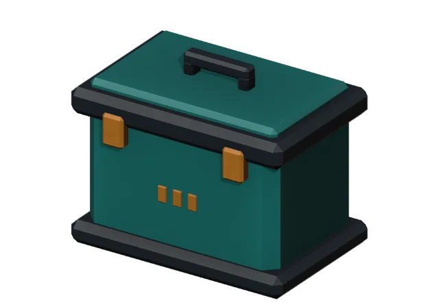
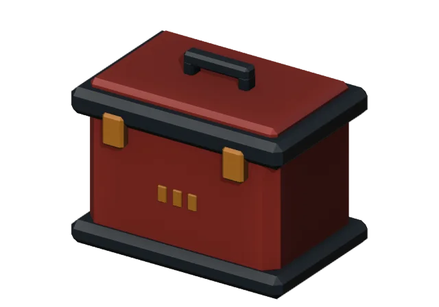

Blender × AI × Godot
Make your first
game prop.
Pick something you'd want in your game. Give an agent a brief or build it by hand, then get it into a scene you can play.

Pick a prop
Three builds, three skills. Choose one to follow through the workshop.
Set up your tools
Get your bench ready before an agent touches a file.
Install Blender
Pick your operating system. Open Blender once to check it starts.
Download Blender ↗Make a practice folder
Call it my-first-prop. Keep it outside your game
project and open this folder in your agent.
How the tools fit together
- AI model
- Plans the prop and drafts instructions or code. The models in this guide usually run online through your provider account.
- Agent harness
- A program such as Codex or Claude Code. It gives the model tools to read the practice folder, edit files and run commands within your permissions.
- T3 Code
- An optional app for opening projects, starting conversations called threads and reviewing work from agents you connect.
- Blender
- Builds and displays the asset. Open it yourself to check the result and make it your own.
Pick how you’ll work
The agent program uses the files and tools you allow on this computer. The model usually runs online through your provider account. Open your practice folder in one of the tools below.
Codex is an agent that can work with files and commands in your practice folder.
- Install the CLI for your system using the guide below.
-
Open a terminal in
my-first-prop(see terminal help below). -
Run
codexin that terminal and sign in. Check its permission settings before asking it to build anything.
Using the desktop app? Open the same folder as a local Codex project.
Claude Code is a terminal agent that can help build and inspect files. Claude Code requires an eligible account; check the age and availability terms below.
- Install Claude Code using the quickstart.
- Open a terminal in
my-first-prop. -
In the terminal, run
claude, sign in, and review its permission settings.
Antigravity is an agent workspace for projects. Check the age, account and regional eligibility below.
- Install and sign in using the quickstart.
-
Open
my-first-propas a project in the desktop app. -
Start an agent session and review its permission settings.
For the CLI, run
agyin the folder’s terminal.
Grok Build is an agent for working with a local project, where available to your account.
- Check access and install using the quickstart.
- Open a terminal in
my-first-prop. -
In the terminal, run
grok, sign in, and review its permission settings. For Grok chat, choose the chat route instead.
T3 Code can run Codex, Claude Code, Antigravity or Grok Build from the same workspace. Start with one. These steps use Codex and require a ChatGPT account with Codex access.
- Open T3 Code. Install the desktop app on the computer where you installed Blender.
- Connect Codex. On the Welcome screen, find Codex and choose Set up → Continue with ChatGPT. Sign in and grant access to your plan. Choose Start when Codex is ready. If you’ve already passed Welcome, use Settings → Providers → Connect with ChatGPT.
-
Open your project. Drag
my-first-proponto the desktop app’s sidebar. A plain folder works for this lesson. - Choose your permissions. Start a thread in that project and select Codex. A fresh installation starts new threads in Full access, which allows commands and file edits without approval prompts. Before sending anything, use Permissions in the message box’s model picker and select Supervised.
-
Check the connection. Paste the check below
into the thread. If T3 asks to run
blender --version, read the command before approving it. Look for your practice folder and a Blender version in the reply.
Use a Codex CLI you’ve already set up
Choose Use existing CLI on the Welcome
screen. If you need to sign in, run
codex login in a terminal on the computer with
Blender. After Welcome, you can add a Codex instance in
Settings → Providers and choose
Configure manually. Select that Codex
instance in the thread’s model picker.
Stuck in T3 Code?
- Codex is missing. Check the account under Settings → Providers. For a manual setup, check the Binary path setting in the Codex provider.
- Blender is missing. Check which computer the thread is running on. Use the Blender path help below.
- You want the agent to inspect an open scene. Use the optional MCP guide below for that connection.
Try the connection check
Paste this into your agent’s chat or thread. Check that its reply names your practice folder and gives a Blender version.
Confirm which practice folder you are using. Run blender --version and report the output. If Blender isn't found, help me locate its executable. Ask before installing anything or changing settings.
Tell chat which Blender you use
Find your version on Blender’s splash screen or under Help → About Blender. Replace the bracketed text before sending the prompt.
I’m using Blender [version] on [Windows, macOS or Linux]. Help me make a simple game prop by hand. Give me numbered steps with menu names that match my version. Pause after each stage so I can check the result.
Terminal help and the Blender path
-
Windows: Open the folder in File Explorer.
Type
powershellin the address bar and press Enter. -
macOS: Type
cdand a space in Terminal. Drag in the folder from Finder and press Enter. - Linux: Look for Open in Terminal in the folder’s right-click menu.
If blender isn't found, use its full path. On macOS
look inside Blender.app/Contents/MacOS/Blender. On
Windows, find blender.exe in the install folder. In
PowerShell use
& "C:\path\to\blender.exe" --version, replacing
the example path with yours.
Optional: inspect an open Blender scene with MCP
MCP lets an agent call tools in another app. This community add-on can modify your open Blender scene. Try it in an empty practice scene on your own computer.
- Use the MCP for Blender project guide to install the prerequisites and add-on.
- Press N in Blender’s 3D View, open its add-on tab and start the connection.
-
For Codex CLI run
codex mcp add blender -- uvx mcp-for-blenderand start a fresh session. See the add-on guide for Claude. Use the Antigravity and Grok Build docs for their client setup. - Paste the read-only request below into the agent and compare its answer with Blender’s Outliner.
MCP connects an agent to tools in a running app. It is optional; the background Blender route does not need it. The client, server and Blender must be connected as described in the add-on guide.
List the objects in the current Blender scene. Do not add, change, delete or save anything.
Draft a prop
Give your prop a job in the game. Then decide which detail sells it.
Rescue crate
Make loot stand out in a dim mountain rescue shelter.
Your call: bright latches or a chunky handle?
- Save any work open in Blender. Paste the brief into your agent’s practice folder session.
- Read the plan and file paths. Ask about anything unclear before approving the build.
-
Open the new
.blend. Orbit around it and switch to Material Preview.
Plan a rescue crate for a dim mountain shelter. Make it 1.2 m wide with a chunky handle and amber latches. Keep it under 1,000 triangles and check that its base sits flat.
Block it out by hand in Blender
A blockout uses simple shapes to test size and silhouette before you add details. Open a new General file. Press N in the 3D View and use Item for dimensions and location.
- Set the cube’s dimensions to 1.2 × 0.8 × 0.8 m and its Z location to 0.4 m.
- Add a second cube for the lid. Set its dimensions to 1.26 × 0.86 × 0.12 m and its Z location to 0.86 m.
-
Orbit the crate. Check the overhang from the side and save it
as
crate-v1.blend.
Prompt Lab
Make it specific enough that you can tell when it worked.
Quick challenge: pick the stronger brief
Shape your brief
Start with a prop, then change a detail and see how it affects the draft. Use the load button to replace the fields with the selected prop’s starter brief.
Live: field changes update this draft.
Patch one thing
Change one detail per pass and you’ll know what made the difference.

Try both shells against a snowy backdrop. Which would you spot first at player distance?
Find the flaw
Look from the game camera angle. Check the outline, materials and contact with the floor.
Lock what works
Name what should stay the same. Save the revision separately and compare before choosing.
Quick challenge: choose a patch you can test
Try a one-change revision
Try a signal red shell and keep the crate’s shape, size and amber latches. Save the revision separately and re-import the GLB to check that the colour carried through.
Playtest in Godot
Keep the .blend as your editable original. Bring
the .glb into your game.
- Export. Select the prop meshes in Blender. Under File → Export → glTF 2.0, choose GLB and export selected objects so the default camera and light stay out of the asset.
- Drop it into a scene. Copy the GLB into a Godot 4 project. Drag it from FileSystem into a 3D scene.
- Test it at player scale. With Blender’s default glTF axis conversion, a base at Blender Z = 0 should sit at Godot Y = 0. Compare the prop with your player and check its material in the scene lighting.
If the crate should block the player, put a collision shape under
a StaticBody3D. The GLB gives you the visible mesh.
Should the prop block, move or detect?
StaticBody3Dfor cover that stays put.-
Area3Dfor a pickup or trigger that detects the player. -
RigidBody3Dfor something the player can knock around.
Add a CollisionShape3D to the body or area. Use a
simple box or cylinder for this first test.
Field kit
Keep this open beside Blender when you get stuck.
Find your way around Blender
- Middle mouse drag
- Orbit around the prop.
- Scroll
- Zoom in and out.
- View → Frame Selected
- Find the prop if you lose it.
- Z → Material Preview
- See the surface colours.
- N → Item
- Check dimensions and location.
Fix a floating, translucent or oversized prop
Check the lowest point of the prop’s mesh in Blender. Move the whole prop so it rests at Z = 0, keep the parts aligned, and export a new GLB. Tell me what changed.
Check the exported materials. Make a test copy with a simple Principled BSDF base colour and roughness, then re-import the GLB and compare it with the source.
Tell me the prop’s width, depth and height in metres. Compare them with my brief, fix any mismatch in a new version, and check the dimensions again after re-import.
Unstick the agent
Paste the exact error and say which step failed. Ask for one check at a time; review any proposed command before running it.
I am stuck at [step]. The exact message is [paste it here]. Explain what it means and suggest one read-only check. Ask before changing files or settings.
Three ideas for your next prop
- Medkit: Can you recognise the silhouette at the size it appears in your inventory?
- Trail sign: Is the arrow clear from your player’s camera?
- Wall torch: Can you align its mount flush against a wall?
Your checkpoints
0 of 5 checkpoints marked.
Mark them when you’ve done the work. You can explore every lesson at any time.